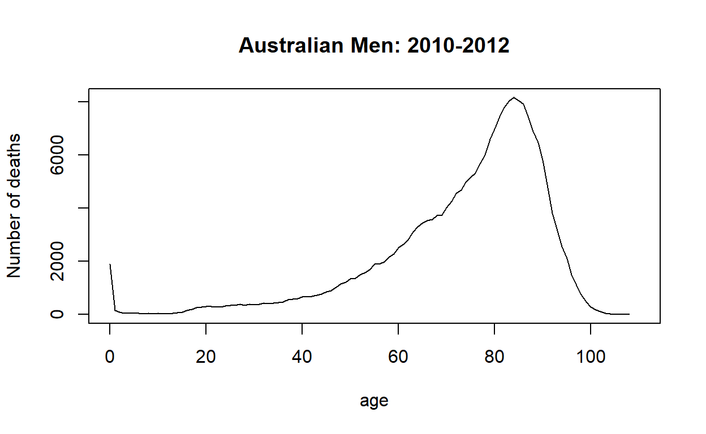
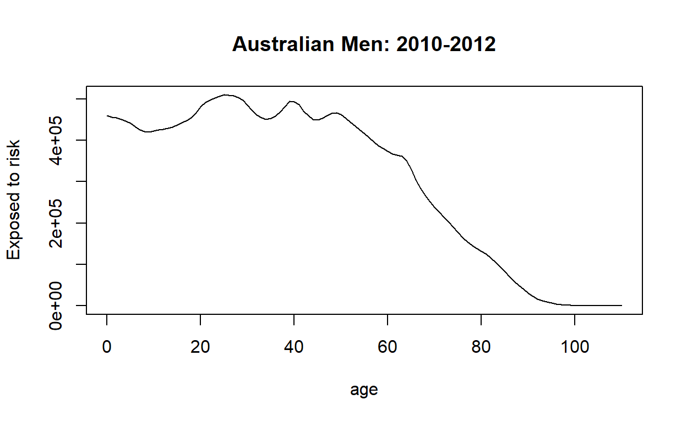
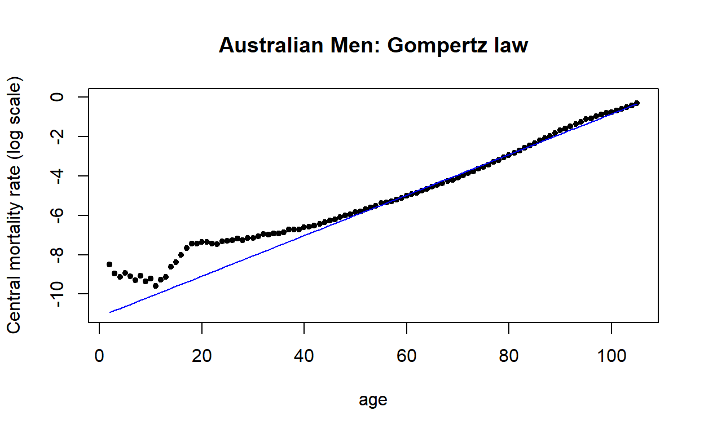
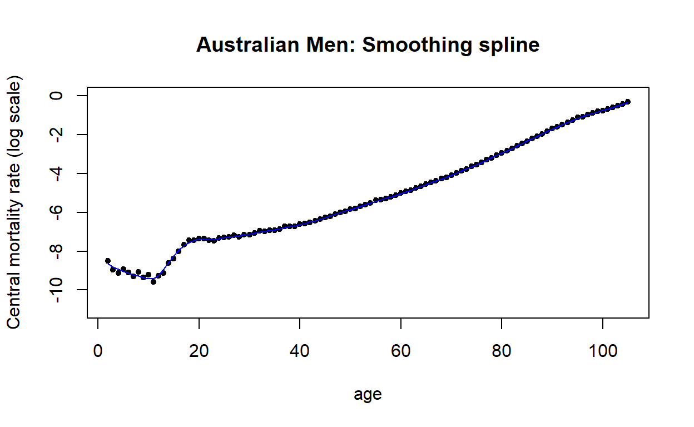
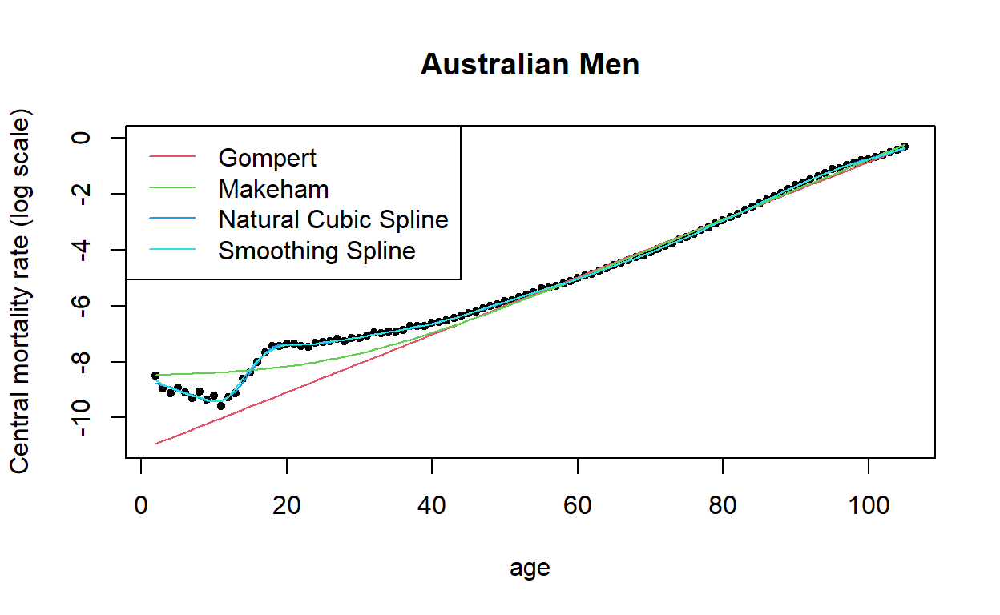

Introduction
In this manual we aim to discuss the implementation in R of the main graduation techniques as well as the implementation of some of the statistical tests used to test the appropriateness of a graduation.
For illustrative purposes we will aim to replicate some of the results of the graduation of the Australian Life Tables 2010-12) (ALT2010-12) produced by the Australian Government Actuary (2014). The report discussing the main features of the construction of the ALT2010-12 can be seen at http://www.aga.gov.au/publications/life_table_2010-12/default.asp.
It is assumed that the reader has a basic understanding of working in R. For this module, we will need the demography (Hyndman 2014) package. Note that this package has been loaded in the current R workspace. Therefore you can utilise the capacities of the package without explicitly loading it.
However, if you are using this package outside this tutorial remember to first install the package with the code:
install.packages("demography", dependencies = TRUE)And then load it with the instruction
library("demography")Data
Mortality data for Australia can be obtained from the Human Mortality Database (2014), which is a very useful resource for accessing mortality data from several countries in the world. To be able to download data from the Human Mortality Database please register on their website http://www.mortality.org/. Take note of your “username” and “password.”
To download the mortality data for Australia type the following commands, noting that "username" and "password" need to be replaced by your logging information from the Human Mortality Database:
library(demography)
AUSdata <- hmd.mx(country = "AUS", username = "username", password = "password")A quick graph of the historical evolution of the mortality rates for Australian men can be produced with the code:
plot(AUSdata, series = "male")The ALT2010-12 uses mortality data for the years 2010-2012. The total number of deaths, the central exposed to risk and the central mortality rates for this period can be calculated as follows:
Ext <- AUSdata$pop$male
mxt <- AUSdata$rate$male
Dxt <- round(Ext * mxt)
Ex <- rowSums(Ext[, c("2010", "2011", "2012")])
Dx <- rowSums(Dxt[, c("2010", "2011", "2012")])
mx <- Dx/Ex Plots by age of the number of deaths, the central exposed to risk and the central mortality rates can be produced as follows:
age <- AUSdata$age
plot(age, Dx, type = "l", xlab = "age", ylab = "Number of deaths",
main = "Australian Men: 2010-2012")
plot(age, Ex, type = "l", xlab = "age", ylab = "Exposed to risk",
main = "Australian Men: 2010-2012")
plot(log(mx), type = 'l' , xlab = "age", ylab = "Central mortality rate (log scale)",
main = "Australian Men: 2010-2012")Compare these lasts two plots with Figure 15 and Figure 16 in the ALT2010-2012 Report.
Graduation - parametric laws
We will now show how to implement in R the Gompertz and Makeham models.
The main part of the graduation of the ALT2010-2012 focused on the age range 2-105 so we will apply these methods to this age range. The following code extracts this range from the data:
x <- 2:105
mx <- mx[as.character(x)]
Ex <- Ex[as.character(x)]
Dx <- Dx[as.character(x)]Gompertz laws
Under the Gompertz law, the force of mortality is assumed to be given by \[\mu_x = BC^x\]. In order to fit the model, it is convenient to rewrite the Gompertz law as \[\mu_x = e^{\beta_0 + \beta_1 x},\] where \(B=e^{\beta_0}\) and \(C = e^{\beta_1}\).
Weighted least squares estimates of parameters \(\beta_0\) and \(\beta_1\) can be obtained using the function nls, which is a general function for non-linear least squares estimation. This can be done with the following code:
gompertz <- nls(mx ~ exp(b0 + b1*x), start = list(b0 = 1, b1 = 0), weights = Ex/mx)
gompertz## Nonlinear regression model
## model: mx ~ exp(b0 + b1 * x)
## data: parent.frame()
## b0 b1
## -11.141 0.103
## weighted residual sum-of-squares: 6792
##
## Number of iterations to convergence: 19
## Achieved convergence tolerance: 2.616e-06In the above code, it is worth noticing that we are using weights \(w_x=1/var(\tilde{\mu}_x)\approx E_x^c/m_x\).
We can obtain and plot the graduated (fitted) mortality rates as follows:
mx_gompertz <- fitted(gompertz)
plot(x, log(mx), pch = 20, xlab = "age", ylab = "Central mortality rate (log scale)",
main = "Australian Men: Gompertz law",ylim = range(-11, 0))
lines(x, log(mx_gompertz), col ='blue')
The Gompertz law assumes linearity of the force of mortality on a log-scale. This is clearly not appropriate for the full age range, but could be reasonable if we were graduating only adult ages, say from age 50 onwards.
Makeham law
Under the Makeham law, the force of mortality is assumed to be given by \[\mu_x = A + BC^x.\] As with the Gompertz law, it is convenient to rewrite the Makeham law as \[\mu_x = A + e^{\beta_0 + \beta_1 x}\] to facilitate its fitting in R. Weighted least squares estimates of parameters of \(A\), \(\beta_0\) and \(\beta_1\) can be obtained as follows:
makeham <- nls(mx ~ A + exp(b0 + b1*x), start = list(A = 0, b0 = coef(gompertz)[1], b1 = coef(gompertz)[2]), weights = Ex/mx)
makeham## Nonlinear regression model
## model: mx ~ A + exp(b0 + b1 * x)
## data: parent.frame()
## A b0 b1
## 1.972e-04 -1.147e+01 1.070e-01
## weighted residual sum-of-squares: 4376
##
## Number of iterations to convergence: 6
## Achieved convergence tolerance: 6.351e-06In the above code note that we have used the parameter estimates of the Gompertz model as our starting parameter values.
We can obtain and plot the graduated mortality rates as follows:
mx_makeham <- fitted(makeham)
plot(x, log(mx), pch = 20, xlab = "age", ylab = "Central mortality rate (log scale)",
main = "Australian Men: Makeham law", ylim = range(-11, 0))
lines(x,log(mx_makeham), col = 'blue')Although the Makeham law shows a better fit to the data than the Gompertz law, it still doesn’t look appropriate as it cannot capture the accident hump, nor child mortality. The Makeham law might be a reasonable model if we were considering ages from 20 onwards.
Exercises
Graduation - splines
We will now show how to implement in R the Natural Cubic Splines and Smoothing Splines.
We will use the same data set as that of the previous section.
Regression splines
The graduation of the ALT2010-2012 was carried out using natural cubic splines. Here we illustrate how to fit such an approach in R.
The splines package provides functions for fitting cubic splines and natural cubic splines. This package uses B-Splines, which are a convenient way of representing spline functions.
One of the main issues with spline graduation is selecting the position of the knots. In the ALT2010-2012 graduation for males, the knots were placed at ages 7, 12, 16, 18, 20, 32, 53, 54, 61, 66, 77, 90, 95. For simplicity, we will use the same knots in this exercise.
Using function ns, the basis (regressors) for the natural cubic splines can be created and plotted as follows:
library(splines)
knots <- c(7, 12, 16, 18, 20, 32, 53, 54, 61, 66, 77, 90, 95)
cubic_basis <- ns(x, knots = knots)
matplot(x, cubic_basis, type = "l", xlab = "age (x)", ylab = "phi_i(x)",
main = "Cubic B-spline basis")Fitting a natural cubic spline to the mortality rates reduces then to estimating the following linear regression model:
\[\mu_x = \beta_0 + \sum_i \beta_i \phi_i(x) + \epsilon_x\]
where the \(\phi_i(x)\) are the functions plotted in the above graph. Hence, weighted least squares estimates of the parameters \(\beta_i\) can easily be obtained using the standard linear regression function lm:
cubSpline <- lm(mx ~ cubic_basis, weights = Ex / mx )
cubSpline##
## Call:
## lm(formula = mx ~ cubic_basis, weights = Ex/mx)
##
## Coefficients:
## (Intercept) cubic_basis1 cubic_basis2 cubic_basis3 cubic_basis4
## 1.575e-04 -1.025e-04 3.573e-05 4.817e-04 4.080e-04
## cubic_basis5 cubic_basis6 cubic_basis7 cubic_basis8 cubic_basis9
## 8.334e-04 1.331e-03 4.530e-03 6.120e-03 1.264e-02
## cubic_basis10 cubic_basis11 cubic_basis12 cubic_basis13 cubic_basis14
## 2.789e-02 1.002e-01 3.522e-01 5.441e-01 6.721e-01We can obtain and plot the graduated mortality rates as follows:
mx_cubSpline <- fitted(cubSpline)
plot(x, log(mx), pch = 20, xlab = "age", ylab = "Central mortality rate (log scale)",
main = "Australian Men: Natural cubic spline", ylim = range(-11,0))
lines(x, log(mx_cubSpline), col = 'blue')This is clearly a much better fit than the one obtained using the Gompertz or Makeham law.
Smoothing splines
Cubic splines also arise as the solution of the following variation problem
\[\min\limits_{f} \sum_{i=1}^n\left[y_i - f(x_i)\right]^2+\lambda \int_{x_1}^{x_n}\left[f''(t)\right]^2, \mathrm{d} t\]
where \(\lambda\) is a smoothing parameter capturing the trade-off between goodness-of-fit and smoothness. This non-parametric graduation approach can be implemented in R with the function smoothing.spline. The code below fits a smoothing spline to the Australian men data.
smSpline <- smooth.spline(x, mx, spar = 0.4)
smSpline## Call:
## smooth.spline(x = x, y = mx, spar = 0.4)
##
## Smoothing Parameter spar= 0.4 lambda= 3.326313e-06
## Equivalent Degrees of Freedom (Df): 26.97156
## Penalized Criterion (RSS): 0.0007001976
## GCV: 1.227303e-05In the code above, we note that spar is the smoothing parameter with \(\lambda = r * 256^{(3*spar - 1)}\) for an appropriately defined value of \(r\). Determining the adequate smoothing parameter is the main complication of smoothing splines, but after some trial and error spar=0.4 seems to produce satisfactory results for this particular application.
We can obtain and plot the graduated mortality rates as follows:
mx_smSpline <- fitted(smSpline)
plot(x, log(mx), pch = 20, xlab = "age", ylab = "Central mortality rate (log scale)",
main = "Australian Men: Smoothing spline", ylim = range(-11, 0))
lines(x, log(mx_smSpline), col = 'blue')
Comparison of graduations
A plot comparing the four sets of graduated rates can be obtained as follows:
plot(x, log(mx), pch = 20, xlab = "age", ylab = "Central mortality rate (log scale)",main = "Australian Men", ylim = range(-11,0))
lines(x, log(mx_gompertz), col = 2)
lines(x, log(mx_makeham), col = 3)
lines(x, log(mx_cubSpline), col = 4)
lines(x, log(mx_smSpline), col = 5)
legend("topleft", legend = c("Gompert", "Makeham", "Natural Cubic Spline",
"Smoothing Spline"), col = 2:5, lty = 1)
We see that clearly, the Gompertz and Makeham graduations are inappropriate, while the natural cubic spline and the smoothing spline are very similar and seem reasonable.
Exercises
load("AUSdata.RData")
Ext <- AUSdata$pop$male
mxt <- AUSdata$rate$male
Dxt <- round(Ext * mxt)
Ex <- rowSums(Ext[, c("2010", "2011", "2012")])
Dx <- rowSums(Dxt[, c("2010", "2011", "2012")])
mx <- Dx/Ex
x <- 2:105
mx <- mx[as.character(x)]
Ex <- Ex[as.character(x)]
Dx <- Dx[as.character(x)]- Modify the codes for fitting the smooth splines. Consider the following two cases.
- Case 1: take
spar=-10(i.e. \(\lambda \approx 0\)) - Case 2: take
spar=2, (i.e. \(\lambda\) very large)
# Case I: lambda is close to 0
smSpline1 <-
mx_smSpline1 <- fitted(smSpline1)
# Case II: lambda is very large
smSpline2 <-
mx_smSpline2 <- fitted(smSpline2)
# Compare the smoothing splines
plot(x, log(mx), pch = 20, xlab = "age", ylab = "Central mortality rate (log scale)", main = "Australian Men: Smoothing spline", ylim = range(-11,0))
lines(x, log(mx_smSpline1), col = 'blue')
lines(x, log(mx_smSpline2), col = 'red')# Case I: lambda is close to 0
smSpline1 <- smooth.spline(x, mx, spar = -10)
mx_smSpline1 <- fitted(smSpline1)
# Case II: lambda is very large
smSpline2 <- smooth.spline(x, mx, spar = 2)
mx_smSpline2 <- fitted(smSpline2)
# Compare the smoothing splines
plot(x, log(mx), pch = 20, xlab = "age", ylab = "Central mortality rate (log scale)", main = "Australian Men: Smoothing spline", ylim = range(-11,0))
lines(x, log(mx_smSpline1), col = 'blue')
lines(x, log(mx_smSpline2), col = 'red')Statistical test
We will now test formally the four set of graduated rates we have produced, using the different statistical test. Most of the statistical test are based on the standardised deviations, which can be computed as follows
zx_makeham <- (Dx - Ex * mx_makeham) / sqrt(Ex * mx_makeham)
zx_gompertz <- (Dx - Ex * mx_gompertz) / sqrt(Ex * mx_gompertz)
zx_cubSpline <- (Dx - Ex * mx_cubSpline) / sqrt(Ex * mx_cubSpline)
zx_smSpline <- (Dx - Ex * mx_smSpline) / sqrt(Ex * mx_smSpline)Chi-square test
The following function provides a generic implementation of the chi-square test, where O is the observed quantity, E is the expected quantity, npar is the number of parameters in the model and alpha is an optional parameter indicating the confidence level of the test:
chi2Test <- function(O, E, npar, alpha = 0.05){
chi2 <- sum((O - E)^2 / E) #Test statistic
df <- length(O) - npar
chi2_alpha <- qchisq(1 - alpha, df) #Critical value
p.value <- 1 - pchisq(chi2, df) #p.value
list(statistic = chi2, c.value = chi2_alpha, df = df, p.value = p.value)
}To apply the the chi-square test, we need to know the number of parameters that were estimated in each graduation approach. For the Gompertz and Makeham models, this is 2 and 3, respectively. Note that we could get this automatically with the commands length(coef(gompertz)) and length(coef(makeham)), while for the cubic splines we can obtain them with cubSpline$rank. Since the smoothing splines are a non-parametric approach, the number of parameters is not naturally defined. However, an estimate of the equivalent number of parameters in the graduation can be obtained from smSpline$df. The equivalent number of parameters in this case is 26.9715556. The chi-square test is then applied to the Makeham and Gompertz graudations as follows:
chi2Test(Dx, Ex * mx_gompertz, 2)## $statistic
## [1] 17900.4
##
## $c.value
## [1] 126.5741
##
## $df
## [1] 102
##
## $p.value
## [1] 0chi2Test(Dx, Ex * mx_makeham, 3)## $statistic
## [1] 5483.707
##
## $c.value
## [1] 125.4584
##
## $df
## [1] 101
##
## $p.value
## [1] 0As expected the p-values for the Gompertz and Makeham graduation are close to zero, indicating the unsatisfactory fit of these two approaches.
Exercise
load("AUSdata.RData")
Ext <- AUSdata$pop$male
mxt <- AUSdata$rate$male
Dxt <- round(Ext * mxt)
Ex <- rowSums(Ext[, c("2010", "2011", "2012")])
Dx <- rowSums(Dxt[, c("2010", "2011", "2012")])
mx <- Dx/Ex
x <- 2:105
mx <- mx[as.character(x)]
Ex <- Ex[as.character(x)]
Dx <- Dx[as.character(x)]
gompertz <- nls(mx ~ exp(b0 + b1*x), start = list(b0 = 1, b1 = 0), weights = Ex/mx)
mx_gompertz <- fitted(gompertz)
makeham <- nls(mx ~ A + exp(b0 + b1*x), start = list(A = 0, b0 = coef(gompertz)[1], b1 = coef(gompertz)[2]), weights = Ex/mx)
mx_makeham <- fitted(makeham)
knots <- c(7, 12, 16, 18, 20, 32, 53, 54, 61, 66, 77, 90, 95)
cubic_basis <- ns(x, knots = knots)
cubSpline <- lm(mx ~ cubic_basis, weights = Ex / mx )
mx_cubSpline <- fitted(cubSpline)
smSpline <- smooth.spline(x, mx, spar = 0.4)
mx_smSpline <- fitted(smSpline)
zx_makeham <- (Dx - Ex * mx_makeham) / sqrt(Ex * mx_makeham)
zx_gompertz <- (Dx - Ex * mx_gompertz) / sqrt(Ex * mx_gompertz)
zx_cubSpline <- (Dx - Ex * mx_cubSpline) / sqrt(Ex * mx_cubSpline)
zx_smSpline <- (Dx - Ex * mx_smSpline) / sqrt(Ex * mx_smSpline)
chi2Test <- function(O, E, npar, alpha = 0.05){
chi2 <- sum((O - E)^2 / E) #Test statistic
df <- length(O) - npar
chi2_alpha <- qchisq(1 - alpha, df) #Critical value
p.value <- 1 - pchisq(chi2, df) #p.value
list(statistic = chi2, c.value = chi2_alpha, df = df, p.value = p.value)
}
stdTest <- function(zx, breaks = c(-Inf, -1, 0, 1, Inf)){
observed <- table(cut(zx, breaks)) #count observation in each interval
expected.p <- diff(pnorm(breaks)) #expected probabilities for standard normal
chisq.test(observed, p = expected.p) #apply chisquare test
}
cumDevTest <- function(A, E, alpha = 0.05){
cumDev <- sum(A - E) / sqrt(sum(E)) #Test statistic
z_alpha <- qnorm(1 - alpha/2) #Critical value
p.value <- 2 *(1 - pnorm(cumDev)) #p.value (Note it is two-tailed)
list(statistic = cumDev, c.value = z_alpha, p.value = p.value)
}
groupSignTest <- function(zx, alpha = 0.05){
#Count +'s and -'s
signs <- sign(zx)
n1 <- sum(signs == 1)
n2 <- sum(signs == -1)
#Count runs
y <- c(-1, sign(zx))
G <- sum((y[-1] != y[-(n1 + n2 + 1)]) & y[-1] != -1) # No Runs
#Normal approximation
mu <- n1 * (n2 + 1) / (n1 + n2)
s2 <- (n1 * n2)^2 / (n1 + n2)^3
G_alpha <- qnorm(alpha, mean = mu, sd = sqrt(s2)) #Critical value
p.value <- (pnorm(G + 0.5, mean = mu, sd = sqrt(s2))) #p.value (one sided)
list(statistic = G, c.value = G_alpha, p.value = p.value)
}Apply the chi-square test to the cubic splines and smooth splines.
# cubic splines
# smoothing splines# cubic splines
chi2Test(Dx, Ex * mx_cubSpline, cubSpline$rank)
# smoothing splines
chi2Test(Dx, Ex * mx_smSpline, smSpline$df) Standardised deviations test
The following function provides an implementation of the standardised deviation test, where zx are the standardised residuals, and breaks are the breaks defining the ranges to use in the test( by default \(\infty\) to -1, -1 to 0, 0 to +1, +1 to \(+\infty\)):
stdTest <- function(zx, breaks = c(-Inf, -1, 0, 1, Inf)){
observed <- table(cut(zx, breaks)) #count observation in each interval
expected.p <- diff(pnorm(breaks)) #expected probabilities for standard normal
chisq.test(observed, p = expected.p) #apply chisquare test
}The above function uses the R function chisq.test which performs a chi-squared goodness-of-fit test.
We can apply this test to the four graduations as follows:
stdTest_gompertz <- stdTest(zx_gompertz)
stdTest_makeham <- stdTest(zx_makeham)
stdTest_cubSpline <- stdTest(zx_cubSpline)
stdTest_smSpline <- stdTest(zx_smSpline)For instance, the output for the natural cubic spline graduation is:
stdTest_cubSpline##
## Chi-squared test for given probabilities
##
## data: observed
## X-squared = 5.8867, df = 3, p-value = 0.1173which indicates that we cannot reject the hypothesis that the standardised residuals follow a standard normal distribution. We can see that the expected and observed values are very close to each other:
stdTest_cubSpline$observed##
## (-Inf,-1] (-1,0] (0,1] (1, Inf]
## 9 44 37 14stdTest_cubSpline$expected## (-Inf,-1] (-1,0] (0,1] (1, Inf]
## 16.50015 35.49985 35.49985 16.50015The Gompertz and Makeham graduations fail the standardised deviations test as their p-value is 0. The smoothing Spline graduation has a p-value of 0.02, so it also fails the standardised deviations test at the 5% level.
Exercise
The standardised deviations test is just one of many approaches for testing the normality of the standardised deviations. Alternatively, you could plot a histogram of the residuals and compare it with a standard normal or use a qqplot. Now create the histogram and Q-Q plot for both the standardised deviations from Gompertz and Smoothing splines fitting. Note you can consider using the hist and qqnorm functions.
# histogram for Gompertz
# Q-Q plot for Gompertz
# histogram for Smoothing splines
# Q-Q plot for Smoothing splines# histogram for Gompertz
hist(zx_gompertz)
# Q-Q plot for Gompertz
qqnorm(zx_gompertz)
# histogram for Smoothing splines
hist(zx_smSpline)
# Q-Q plot for Smoothing splines
qqnorm(zx_smSpline)Exercise
Signs test
The signs test is just a particular case of a test on the probability of success of a Bernoulli experiment (Why?). Hence, we can use the R function binom.test to implement the signs test:
nages <- length(x)
signTest_gompertz <- binom.test(sum(zx_gompertz > 0), nages)
signTest_makeham <- binom.test(sum(zx_makeham > 0), nages)In the above code, sum(zx_gompertz > 0) is counting the number of positive residuals and nages is the number of residuals. For instance, the output of the signs test for Makeham graduation is:
signTest_makeham##
## Exact binomial test
##
## data: sum(zx_makeham > 0) and nages
## number of successes = 62, number of trials = 104, p-value = 0.06193
## alternative hypothesis: true probability of success is not equal to 0.5
## 95 percent confidence interval:
## 0.4954323 0.6912528
## sample estimates:
## probability of success
## 0.5961538This indicates that we cannot reject the hypothesis for the Makeham graduation (i.e. right balance of positive and negative signs) at the 5% level of significance. However, we know that the Makeham graduation has significant bias at different ages. This highlights one of the weaknesses of this test, namely, that positive signs at some ages can be cancelled out by negative signs at other ages.
The Gompertz graduation fails this test (p-value = 0).
Exercise
Apply the signs test to the cubic splines and the smoothing splines, and return the p-values of the tests.
nages <- length(x)
# cubic splines
# smoothing splinesnages <- length(x)
# cubic splines
signTest_cubSpline <- binom.test(sum(zx_cubSpline > 0), nages)
signTest_cubSpline$p.value
# smoothing splines
signTest_smSpline <- binom.test(sum(zx_smSpline > 0), nages)
signTest_smSpline$p.valueExercise
Cumulative deviations test
The following function provides an implementation of the chi-square test, where A is the observed number of deaths, E is the expected number of deaths and alpha is an optional parameter indicating the confidence level of the test:
cumDevTest <- function(A, E, alpha = 0.05){
cumDev <- sum(A - E) / sqrt(sum(E)) #Test statistic
z_alpha <- qnorm(1 - alpha/2) #Critical value
p.value <- 2 *(1 - pnorm(cumDev)) #p.value (Note it is two-tailed)
list(statistic = cumDev, c.value = z_alpha, p.value = p.value)
}We can apply this test to the four graduations as follows:
cumDevTest_cubSpline <- cumDevTest(Dx, Ex * mx_cubSpline)
cumDevTest_smSpline <- cumDevTest(Dx, Ex * mx_smSpline) For instance, the output for the natural cubic spline graduation is:
cumDevTest_cubSpline## $statistic
## [1] 0.1389051
##
## $c.value
## [1] 1.959964
##
## $p.value
## [1] 0.8895252and the high p-value indicates that this graduation passes the test. As expected, the smoothing spline graduation passes the cumulative deviation test with p-value = 0.88.
Exercise
Apply the cumulative deviations test to the Gompertz and Makeham graduation, and return both testing statistics and the p-values of each test.
# cubic splines
# smoothing splines# cubic splines
cumDevTest_gompertz <- cumDevTest(Dx, Ex * mx_gompertz)
cumDevTest_gompertz$statistic
cumDevTest_gompertz$p.value
# smoothing splines
cumDevTest_makeham <- cumDevTest(Dx, Ex * mx_makeham)
cumDevTest_makeham$statistic
cumDevTest_makeham$p.valueExercise
Grouping of signs test
The following function provides an implementation of the grouping of signs test, using the normal approximation, where zx are the standardised deviations and alpha is an optional parameter indicating the confidence level of the test:
groupSignTest <- function(zx, alpha = 0.05){
#Count +'s and -'s
signs <- sign(zx)
n1 <- sum(signs == 1)
n2 <- sum(signs == -1)
#Count runs
y <- c(-1, sign(zx))
G <- sum((y[-1] != y[-(n1 + n2 + 1)]) & y[-1] != -1) # No Runs
#Normal approximation
mu <- n1 * (n2 + 1) / (n1 + n2)
s2 <- (n1 * n2)^2 / (n1 + n2)^3
G_alpha <- qnorm(alpha, mean = mu, sd = sqrt(s2)) #Critical value
p.value <- (pnorm(G + 0.5, mean = mu, sd = sqrt(s2))) #p.value (one sided)
list(statistic = G, c.value = G_alpha, p.value = p.value)
}We can apply this test to the four graduations as follows:
groupSignTest_gompertz <- groupSignTest(zx_gompertz)
groupSignTest_makeham <- groupSignTest(zx_makeham)
groupSignTest_cubSpline <- groupSignTest(zx_cubSpline)
groupSignTest_smSpline <- groupSignTest(zx_smSpline)For instance, the output for the Makeham graduation is:
groupSignTest_makeham## $statistic
## [1] 2
##
## $c.value
## [1] 21.59613
##
## $p.value
## [1] 2.200016e-21which shows that in the Makeham graduation, we have 2 runs of positive signs which is less than the critical value 21.6 and hence we can reject the hypothesis of randomness of the the standardised deviations.
For the other three graduations we see:
- Gompertz: 2 runs and p-value \(=\) 0 so we reject the null hypothesis.
- Cubic spline: 28 runs and p-value \(=\) 0.79 so we cannot reject the null hypothesis.
- Smoothing spline: 29 runs and p-value \(=\) 0.9 so we cannot reject the null hypothesis.
Serial correlations test
To implement the serial correlation test we can use standard R function acf which computes and plots the autocorrelation function of a time series. We can do this with the following
acf(zx_gompertz)acf(zx_makeham)
acf(zx_cubSpline)acf(zx_smSpline)In the above plots, each black vertical line corresponds to the serial correlation at each specific lag, \(r_j\). Note that the formula used by function acf for computing \(r_j\) is slightly different to the one in the lecture notes but the results should be very similar. The dashed blue lines correspond to 95% confidence intervals on the serial correlation values.
The plots indicate that the Gompertz and Makeham graduation show significant serial correlation in their standardised residuals and hence fail this test. By contrast, for the two spline graduations, the serial correlation values are in general inside the confidence intervals so we cannot reject the hypothesis of independence of their corresponding standardised deviations.
Exercise